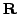

#include <gandalf/vision/euclid3D.h>
This module allows you to manipulate 3D Euclidean transformations, to
represent for instance camera pose relative to a 3D scene. The basic
structure contains a rotation and a translation:
/* 3D pose */
typedef struct
{
Gan_Rot3D rot; /* rotation parameters */
Gan_Vector3 trans; /* translation parameters */
} Gan_Euclid3D;
To build a Euclidean transformation structure, you need to decide on a representation for the rotation, and then call one of the following routines:
Gan_Euclid3D Euc; /* Euclidean transformation structure */
double TX, TY, TZ; /* translation vector */
double q0, q1, q2, q3; /* quaternion parameters */
double rx, ry, rz; /* exponential rotation vector parameters */
double angle, ax, ay, az; /* angle/axis parameters */
double Rxx, Rxy, Rxz, Ryx, Ryy, Ryz, Rzx, Rzy, Rzz; /* matrix rotation parameters */
/* ... set up translation and rotation parameters ... */
/* build Euclidean transformation structure using quaternion rotation */
gan_euclid3D_build_quaternion ( &Euc, TX, TY, TZ, q0, q1, q2, q3 );
/* build Euclidean transformation structure using exponential rotation */
gan_euclid3D_build_exponential ( &Euc, TX, TY, TZ, rx, ry, rz );
/* build Euclidean transformation structure using angle/axis rotation */
gan_euclid3D_build_angle_axis ( &Euc, TX, TY, TZ, angle, ax, ay, az );
/* build Euclidean transformation structure using matrix rotation */
gan_euclid3D_build_matrix ( &Euc, TX, TY, TZ,
Rxx, Rxy, Rxz, Ryx, Ryy, Ryz, Rzx, Rzy, Rzz );
There is a pair of routines to set up a null Euclidean transformation (zero translation and rotation):
Gan_Euclid3D Euc; /* declare Euclidean transformation structure */
/* set a null Euclidean transformation structure using a quaternion
representation of rotation */
gan_euclid3D_ident_q ( &Euc, GAN_ROT3D_QUATERNION ); /* OR */
Euc = gan_euclid3D_ident_s ( GAN_ROT3D_QUATERNION );
There is also a set of arithmetical routines. For binary arithmetical operations, both structures must have the same rotation representation, and the operation is a pure parameter addition/subtraction etc., without rescaling or otherwise adjusting the translation & rotation parameters to conform to an actual rotation. This is often required when implementing optimisation, for instance computing derivatives numerically. Firstly there are routines for multiplying or dividing transformation parameters by a scalar:
Gan_Euclid3D Euc1, Euc2; /* declare Euclidean pose parameters T1,R1 and T2,R2 */
/* ... fill T1,R1 with translation & rotation parameters ... */
/* multiply the T1,R1 parameters by 3, writing them into T2,R2 */
gan_euclid3D_scale_q ( &Euc1, 3.0, &Euc2 ); /* T2 = 3*T1, R2 = 3*R1, OR */
R2 = gan_euclid3D_scale_s ( &Euc1, 3.0 ); /* T2 = 3*T1, R2 = 3*R1, OR */
gan_euclid3D_scale_i ( &Euc1, 3.0 ); /* replace T1 = 3*T1, R1 = 3*R1 */
/* divide the rotation parameters R1 by 3, writing them into R2 */
gan_euclid3D_divide_q ( &Euc1, 3.0, &Euc2 ); /* T2 = T1/3, R2 = R1/3, OR */
R2 = gan_euclid3D_divide_s ( &Euc1, 3.0 ); /* T2 = T1/3, R2 = R1/3, OR */
gan_euclid3D_divide_i ( &Euc1, 3.0 ); /* replace T1 = T1/3, R1 = R1/3 */
Next a set of routines each for adding and subtracting Euclidean transformation parameters:
Gan_Euc3D Euc1, Euc2, Euc3; /* declare rotations T1,R1, T2,R2 & T3,R3 */
/* ... fill T1,R1 and T2,R2 with translation & rotation parameters ... */
/* add the translation/rotation parameters T1,R1 and T2,R2 */
gan_euclid3D_add_q ( &Euc1, &Euc2, &Euc3 ); /* T3 = T1 + T2, R3 = R1 + R2 */
/* subtract the rotation parameters R1 and R2 */
gan_euclid3D_sub_q ( &Euc1, &Euc2, &Euc3 ); /* T3 = T1 - T2, R3 = R1 - R2 */
For statistical optimisation purposes there is a structure designed to hold
covariance information for 3D pose parameters. Writing the rotation
parameters as a vector  (which could be a 4-parameter quaternion vector
or a 3-parameter exponential vector, for instance), we can write the
covariance as
/* covariance of 3D pose */
typedef struct
{
Gan_Rot3D_Cov Crr; /* covariance of rotation parameters */
Gan_Euclid3D_TRCov Ctr; /* cross-covariance between translation and rotation */
Gan_SquMatrix33 Ctt; /* covariance of translation parameters */
} Gan_Euclid3r_Cov;
The cross-covariance structure between
/* cross-covariance between rotation and translation */
typedef struct Gan_Euclid3D_TRCov
{
Gan_Rot3D_Type type;
union
{
Gan_Matrix34 q; /* quaternion representation (4 parameters) */
Gan_Matrix33 le; /* exponential representation (3 parameters) */
} d;
} Gan_Euclid3D_TRCov;
Error detection: The gan_euclid3D_build_...() and all the gan_euclid3D_..._[qi]() routines return a boolean value, and return GAN_FALSE on error, invoking the Gandalf error handler. The main error modes are difference of the representations between two rotation parts of the structures for the arithmetic and combination routines, and illegal parameter values.